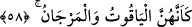

57. Öyleyken Rabbinizin hangi nimetlerini yalanlayabilirsiniz?
Nefislerinizin faydalanacağı bu nimetlerden hangisini yalanlayabilirsiniz? Burada
ayrıca şuna işâret vardır; Allah’da fânî, ve O’nunla bâkî olanlara cennetlerde verilen,
zât-ı ilâhî tecellîlerinden, mârifetlerden meydana gelen, başkalarının gözlerinden örtülü
ve uzak hûrîler vardır. Onlar kendi sâhiplerinden başkalarına süslenmezler ve
görünmezler. Kesif, katı yaratılışlarından, nefislerinin karanlığından ve kendileriyle
bakâlarından dolayı nefsin cân’ı ve rûhun insanı, onlardan haberdar olamaz.
58. Sanki onlar yakut ve mercandırlar.
Bu âyet-i kerîme’nin oluşturduğu cümle daha önce geçen âyet-i kerîme’deki
“gözlerini eşlerine çevirmişlerdir” cümlesiyle anlatılan temiz kadınların sıfatıdır.
Mercan kelimesi konusunda açıklama daha önce yapılmıştı. Yakut adlı taşa gelince, sert,
çok ağır, saf ve değerli bir taştır. Kırmızı, beyaz, sarı, yeşil ve mavi çeşitleri vardır.
Yağ gibi yanıcı yönünün azlığından ateş işlemez. Çok yoğun ve sert olduğundan
delinmez, eğe onu aşındıramaz. Zaman geçtikçe güzelliği ve değeri artar. Çok
değerlidir. Özellikle kırmızı cinsi, sonra sarısı çok az bulunan diğer emsaline göre ateşe
en çok dayanan türüdür. Yeşil cinsinin ise ateşe hiç dayanıklılığı yoktur. O günkü
insanların kanâatine göre tıbda yakutun en iyisi rummânî yakutu denilen ve taş renginde
olan cinsidir. Bu yakut türlerinin birinden yüzük takınan kimse taun hastalığından,
yıldırım isabetinden ve suda boğulmaktan korunacağına inanılırdı. Yakuttan bir miktar
üzerinde bulunduran veya yakut yüzük takınan kimse halk nazarında saygı görür,
hükümdarlar da ona itibar ederlerdi. Yakuttan yapılmış bir tür macun yenmesi hâlinde
zehirin etkisini giderdiğine ve insanın gücünü arttırdığına inanılırdı.
Âyet-i kerîme’nin anlamı; yanakları kırmızılıkta yakuta, ciltleri beyazlık ve saflıkta
mercana; yâni incilerin ufaklarına benzerler. Çünkü incilerin küçük taneleri irilerinden
daha beyazdır. Katâde, o hûrîler saflıkta yakuta, beyazlıkta mercana benzerler, demiştir.
Ebû Saîd’in, cennetliklerin vasfı konusunda Rasûlullah (s.a.)’den şunları nakl ettiği
rivâyet edilmiştir; cennetlik olan her erkeğin iki eşi olup her birinin üzerinde yetmiş kat
cennet giysisi olmasına rağmen eti, kanı ve derisi olmaksızın baldırlarının iliği gözükür.
[178]
Yine Peygamber Efendimiz (s.a.) şöyle buyurdular: “Cennete ilk girecek olan kafile
ayın ondördündeki dolunay gibi, onların peşi sıra girecek olanlar en parlak yıldız
gibi olacak. Kalpleri bir tek kişinin kalbi gibi olacak, aralarında düşmanlık ve ihtilaf
bulunmayacak. Onlardan her birinin iki eşi olup, güzelliklerinden dolayı her birinin
etinin arkasından baldırının iliği görülecektir. Cennet ehli akşam sabah Allah’ı
tesbih ederler. Hasta olmazlar, sümkürmez ve tükürmezler. Tabakları altın ve